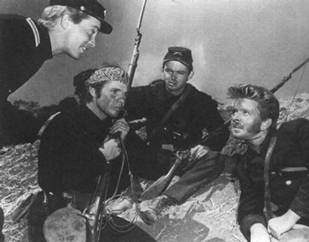
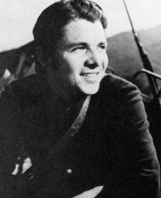

|
Even though Civil War battles were planned by officers, many
of whom never saw the fighting first hand, the war was still
fought by the soldier. And no movie about the Civil War
brings that out more than does The Red Badge of
Courage. Based on Stephen Crane's classic novel about
fear and courage in the face of battle, the film was to go
through many battles of its own. And before it was finally
completed, it helped to dethrone one of Hollywood's leading
studio moguls.
|

A scene from the movie.
|
Dore Schary felt that Stephen Crane's novel would make a
first-rate movie. When he approached MGM head Louis B. Mayer
for approval of the project, Mayer turned him down. Mayer
felt that the film would not be worthwhile
entertainment--there were no women in the cast, no love
interest, and it was just a simple war story. And, of
course, Mayer pulled the old classic line once again, "Civil
War movies don't make money." Schary, however, was
insistent. Finally, Mayer called Nicholas Schenck, the
president of MGM's parent company, Loew's Incorporated.
Mayer and Schenck had gotten along for years without much
interference, and Schenck had approved the selection of
Schary as head of production. But with increasing
regularity, Schenck was being called upon to help settle
feuds between Mayer and Schary. Mayer hoped to get support
from Schenck regarding The Red Badge of Courage.
Schenck, however, agreed with Schary that the picture would
be a good one and should be made. Mayer was livid, arguing
that he, more than anyone else, had run MGM through the
years and knew the movie business better than anyone. He
asked Schenck to decide who should be in charge, Schary or
himself. Schenck decided on Schary, and Louis B. Mayer, at
one time the most powerful studio head in Hollywood, was
gone. He left MGM in the summer of 1951.
Meanwhile, the film that put the kibosh on Mayer's tenure
was being geared up for production. Schary hired John Huston
to be the director and also to collaborate on the
screenplay. Huston followed the feel and the mood of Crane's
narrative almost to the letter. The impish views of young
boys going off into the nightmare of battle, then realizing
with fear and terror just what war meant, were realistically
transformed into a screenplay. For the lead, Huston chose
Audie Murphy, a young actor who knew a battle's ferocity
better than anyone. During World War II, Murphy had become
the most decorated American soldier of the war and was able
to give his role a very personal feeling that was
well-directed by Huston.
Huston planned his production carefully and made up his
mind to photograph the film in such a way that it would
resemble the photos of Matthew Brady. He later stated in an
interview, "I tried to reproduce the feel of the photos with
a kind of bleached effect, because originally they were made
by wet plate photography." The result was worthwhile; the
picture contained some remarkable black and white
photography that gave a sad and remorseful look to the film.
Problems with the film began after its completion. After
a sneak preview of the film, MGM felt that it was too long a
story--long on character development and short on balancing
action. The final result was that the film was cut to a more
manageable length, sixty-nine minutes. This, however, gave
the film a disjointed, confused look, with many scenes not
complementing others.
The producer, Gottfried Reinhardt, decided to add a
narrative to the soundtrack that would lead audiences through
the story so they could follow it better. Although spoken by
|

Audie Murphy
|
the well-voiced actor James Whitmore, the narration failed
to add the right impetus to the now shortened film. Because
of its length, the film was not released as a feature but as
second billing on the double features Metro released that
year. As a result of this, The Red Badge of Courage
suffered miserably from the public's lack of response to it,
although it was well-received by the critics. It never
recovered its 1.6 million dollar investment, though, and in
the end, Louis B. Mayer had been proven right. The picture
was not a success, but only because the director, Huston,
was not allowed to complete the film he envisioned from the
start.
The Red Badge of Courage did resurface again in
1974 when it was remade as a television movie starring
Richard Thomas. Although not having the moodiness and style
of Huston's black and white effort, the emotions of the
characters were well-presented by the actors. Unfortunately,
the picture tried to be too psychological, complicating the
natural, easy-going style of the original story. One of the
major disappointments of the television version is that it
was filmed near Tucson, Arizona, an area of the country that
hardly resembles the thick, green foliage that sustained the
soldiers who fought between 1861 and 1865.
Source: John M. Cassidy, Civil War Cinema: A Pictorial History of Hollywood and the War Between the States
(Missoula, MT: Pictorial Histories Publishing Company, 1986), 108-112.
|